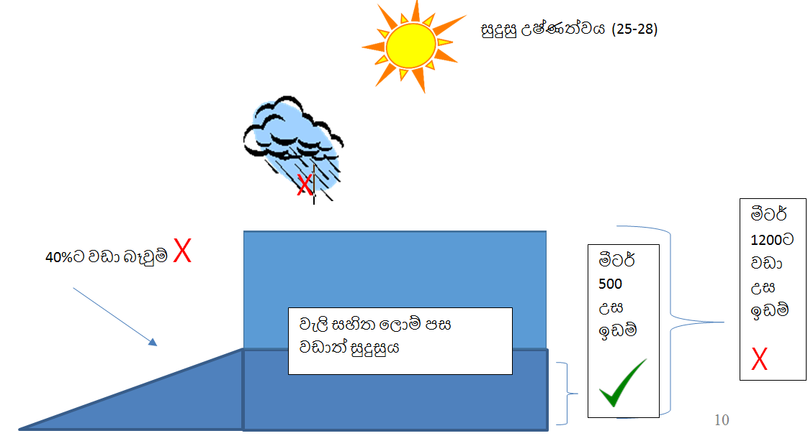

රජයේ නීති වලට අනුකූලද ?
- මධ්යම රජයේ නීති
- පළාත් සභාවේ නීති
- ප්රාදේශීය සභාවේ නීති
ඔබගේ ඉඩම දූෂිත ඉඩමක්ද? ( දූෂණය විය හැකි ආකාර හඳුනා ගැනීම, කල හැකි පිළියම් )
- රසායනික දූෂණය
- ජීව විද්යාත්මක දූෂණය
- භෞතික දූෂණය
වෙනත් තොරතුරු
- භූමියේ අතීත වගාවන්
- අවට ඉඩම් වල වගාවන් --------> අවධානම් X
- ඉඩම් යෝග්යතා අධ්යනය ---------> කල හැකි ආකාරය
- කෘෂිකර්ම දෙපාර්තමේන්තුවේ නිර්දේශ
